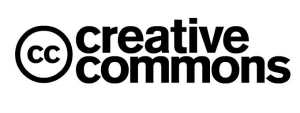

Why Use Free Software
Free Software for Everyone
Four Freedoms of Libre Software
Ethics, or moral principles that govern a person’s or group’s behavior, fall under the moral guidelines of libre software. Free software is ethical because it does not attempt to withhold knowledge from the user. A prerequisite for the four freedoms of libre software adheres to a person’s ability to access a program's source-code. The four freedoms are as follows
Freedom 0: The freedom to run the program, for any purpose
Freedom 1: The freedom to study how the program works, and change it so it does your computing as you wish
Freedom 2: The freedom to redistribute copies so you can help your neighbor
Freedom 3: The freedom to change and distribute modified copies of the program to others
By having access to a program’s code, you are aware of what your program is doing and have the ability to modify it to fit your needs. A common method to gain access to source code is through an online repository, and compiling the source using a freely available compiler. GitHub is a prime example of an online repository that emphasizes the importance of free and open projects. There, you have the option to download a clone of the source code, or modify it to the features you wish to include, and compile the program if your choose. GitHub was originally named after the Git Revision System, which was written by Linus Torvalds, the author of the Linux kernel- an essential component to most free software operating systems. “GitHub has grown into one of the world's largest open source communities, that contributes to powerful collaboration, code review, and code management for open source and private projects." There are other repositories besides GitHub available, therefore one will never be without code and guidance in their programming endeavors.
 The software will not intrude upon the privacy of its users because it is written by individuals who put users’ freedoms first. Digital Rights [Restriction] Management is an example of a type of software that spies on it’s users under the guise of protecting a corporation’s intellectual property. DRM is evident in Netflix, Amazon, Hulu, YouTube, and Facebook in order to prevent its users from sharing or downloading their hosted data. Free Software does not promote the theft of intellectual property, instead they support making and using content that does not rely on DRM, preserving the inherent right to share with their neighbor and alter their property or devices as they desire; hence advocating ethical computer use, programming, and management.
The software will not intrude upon the privacy of its users because it is written by individuals who put users’ freedoms first. Digital Rights [Restriction] Management is an example of a type of software that spies on it’s users under the guise of protecting a corporation’s intellectual property. DRM is evident in Netflix, Amazon, Hulu, YouTube, and Facebook in order to prevent its users from sharing or downloading their hosted data. Free Software does not promote the theft of intellectual property, instead they support making and using content that does not rely on DRM, preserving the inherent right to share with their neighbor and alter their property or devices as they desire; hence advocating ethical computer use, programming, and management.
The licensing of free software is designed to do the user good. Since the ideals of free software support the open sharing of knowledge, it would be immoral to keep things from your neighbors and withholding from them the benefits of open software. It is similar to lending a copy of a book to your coworker or relative, in which you have annotated to better your understanding and to possibly use for a work of your own. That is like providing well-documented source code and allowing others to change it, to make a better or more useful program. The GNU GPL v2 is an example of a Free Software license that protects a user’s freedoms. There are many free software licenses, from the Apache License, BSD-type licenses, plus many variants of the GPL such as the LGPL. Each of these licenses vary in their permissions, but all of them ensure that the four freedoms are observed and respected.

Creative Commons is an organization that makes licenses designed to ensure the sharing of creative works of knowledge and opinion. For example, a paper on the debate of calling butterflies by their scientific name versus their more common name could be licensed under a Creative Commons license. The Creative Commons Attribution license allows derivative works to be elaborated on the opinion of the original author, yet preserving their authorship, in a CopyLeft style.
Reliability and Consistancy of Free Software
Packages in most mainstream Free Software operating systems are regularly updated and maintained through the inclusion of upstream packages being used in older distributions. Newer software is constantly being written and improved, and security and bugfix updates are sent downstream to computers running stable distributions to enhance reliability. If a Free Software user finds a program that is in need of maintenance, they have the liberty of changing the code to however they deem necessary.
Revisions to the source are audited and approved by the project’s leader, preventing those of malicious intent to tamper with the program. To revise code, a process is undergone where a patch is submitted and after an auditor has approved the change, included upon to a repository where all the source code is held. Said change is committed and usually built into a precompiled binary. The newly compiled program will be tested and verified to ensure functionality before being pushed out as an official update. The programs are usually written using transparent, structured code, making it easy to review the code for bugs and improve upon deficiencies.
What makes code transparent, is that you can see what the code is actually doing, as it is well-documented and formatted for easy reading and understanding. You are able to view it, modify it, and compile your modified version, most often only needing three commands. If one does not know how to go about this, there is readily available resources online and in print for all free software seeking users.
Libre Software is Always Developing
Worldwide availability of talented software developers are willing to contribute their time, energy, and creativity to free and open source software. The Free Software Foundation employs software developers to maintain and develop programs that are licensed to be compliant with the four freedoms. There are also developers who contribute their own free software programs without pay simply for the moral motivation gained from helping their neighbor, they profit by both making and encouraging others to make programs in order to expand and increase the influence that the free software ecosystem has.
The free software community is expanding as well. Since free software is meant to be shared with your neighbor, there is camaraderie within the ecosystem and community, where people share their knowledge and advances. The foundation has mailing lists, which send out notifications of new information to keep their users updated and is also active on social networking sites.
Founder and president, Richard Stallman, travels the world to spread and encourage the usage of free software by spreading his philosophy. While its founder is globetrotting and spreading the philosophy of libre software, the foundation is carrying out freedom-themed campaigns such as: Free JS, Secure Boot vs Restricted Boot, Upgrade from Windows 8, Resist Bulk Surveillance, Meet the Free Software Gang, Defective by Design and many more.The movement has been steadily gaining attention throughout decades and making considerable progress in each of its movements.